Case study · Kumamoto
熊本城
從加藤清正築城，到西南戰爭、戰後復興與熊本地震。這一頁用你拍攝的素材，把「城」拆成軍事、建築、生活與城市四個層次。

1599新城築城開始
1607新城完成
1632細川忠利入城
1877天守、本丸御殿等燒失
1960大小天守外觀重建
2016熊本地震受災
2021天守閣復舊完成
01 · Build
一座城不是一次完成，而是不斷疊加的工程。
從曲輪形成圖、築城網絡與天守木構，可以把「築城」理解成長期的政治與工程行動。
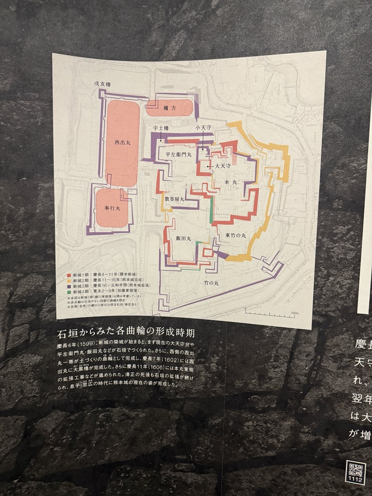
曲輪
本丸、西出丸等區域在不同時期逐步形成。後續版本可把這張展板重新繪製成「年份 slider」，讓城郭區域隨時間逐步亮起。
02 · Defense
點擊防禦節點，看敵人接近城時會遇到什麼。

Interactive annotation
壁
厚實的牆體與外裝形成防護面；在城郭中，牆面也會與開口、石垣、櫓的位置共同設計。
目前熱點位置是依照片視覺配置做的 prototype；正式版會改成重新繪製的城立面圖，避免直接把展板當成互動底圖。
03 · Life & Power
城不只打仗，也要治理、接待、生活與展示權力。
御殿模型、疊蓆、建具、障壁畫與金色空間，能把「誰在城裡做什麼」具體化。

御殿
政務與儀式的核心空間。和天守相比，御殿更接近日常治理與正式接待的舞台；空間的高低、隔間與裝飾，也呈現身分秩序。
04 · City
再拉遠：城的外面，就是城下町。

城＋城市
道路、水系、武家地、町人地與城郭互相配合。後續版本可把這個概念與日本地圖連動，讓使用者從一座城切到一個藩，再切到整個日本的政治版圖。
05 · Archive
20 張熊本城素材
點圖可放大。正式版會為每張照片加上拍攝地、主題、來源與可公開使用狀態。
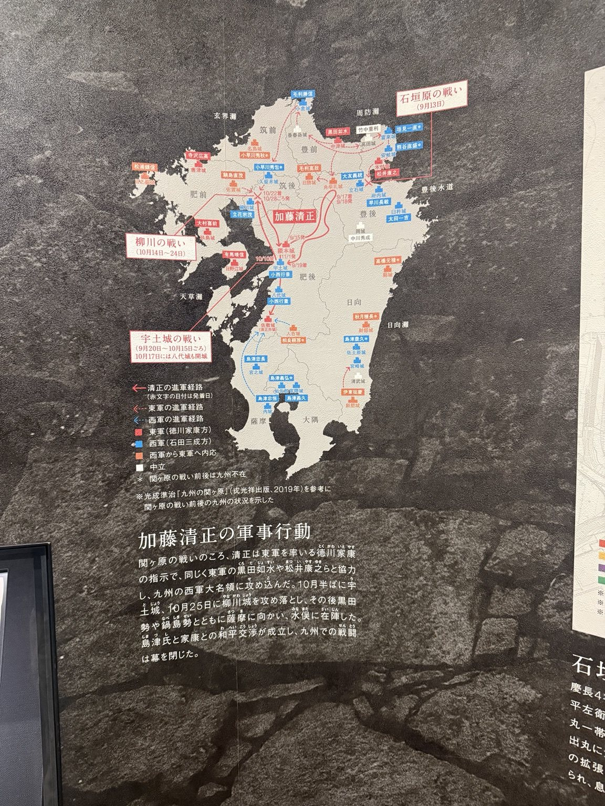
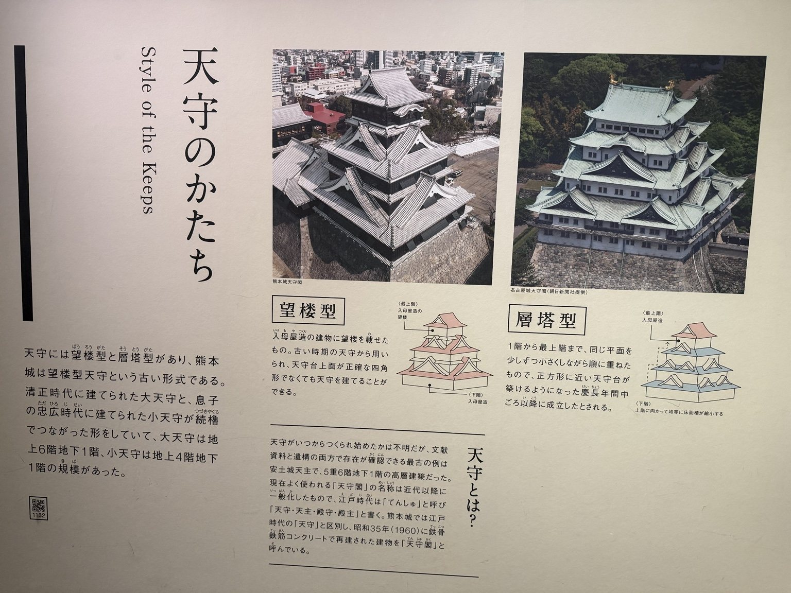

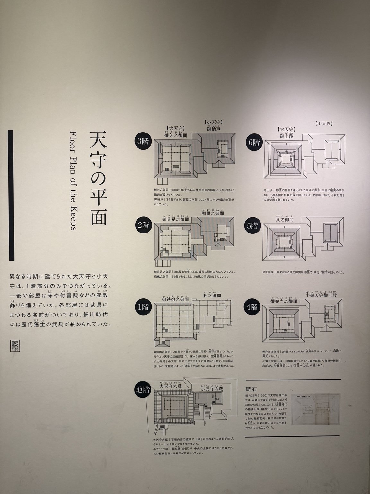
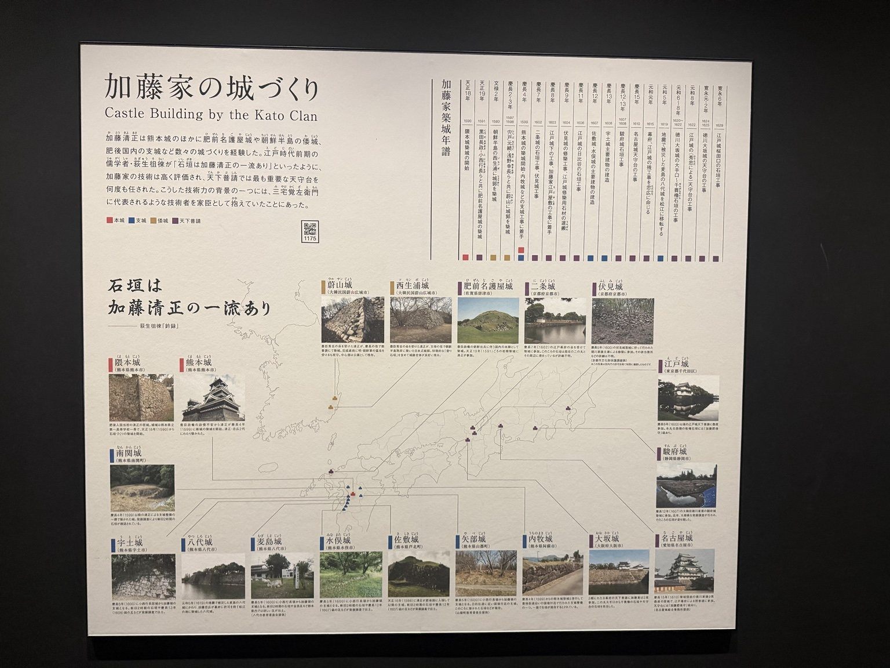
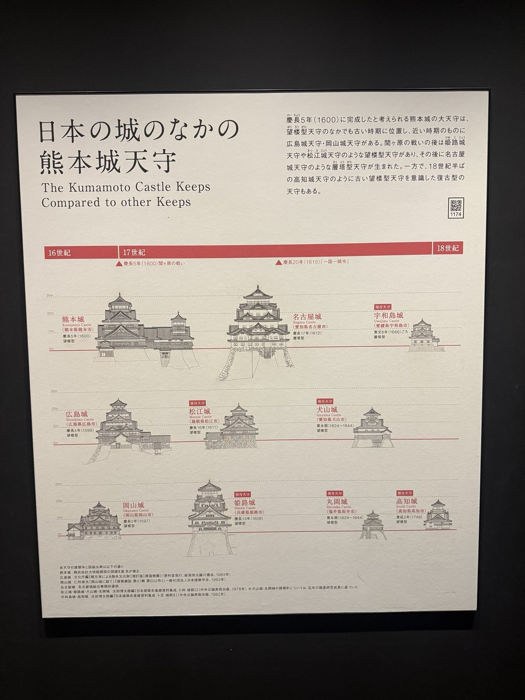
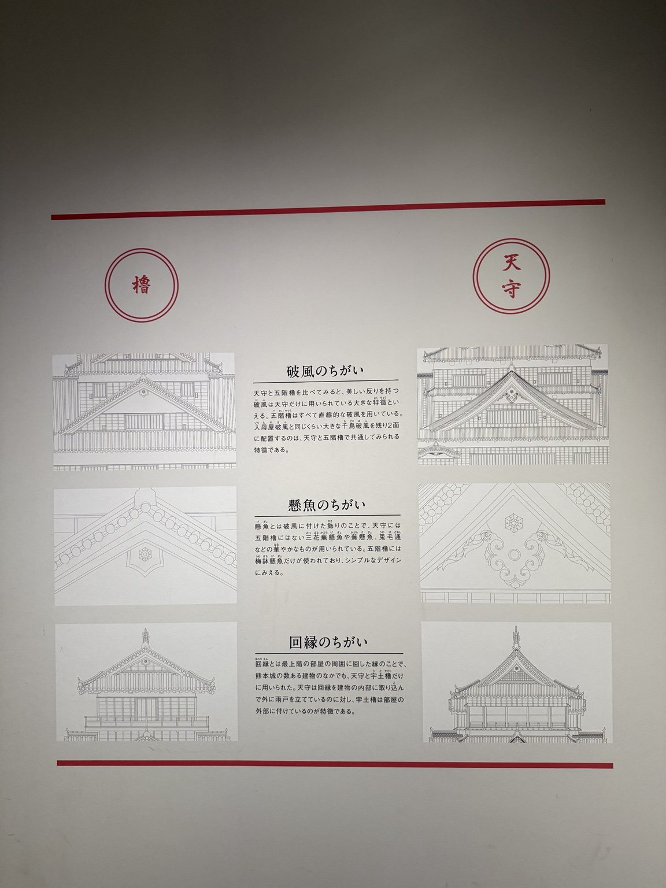
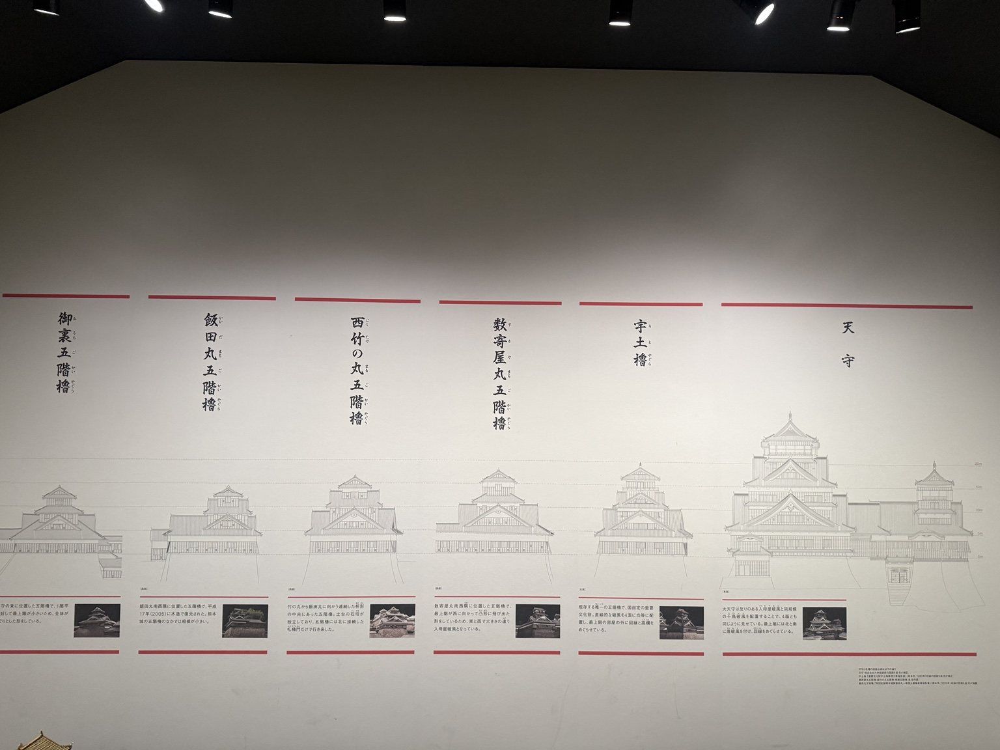
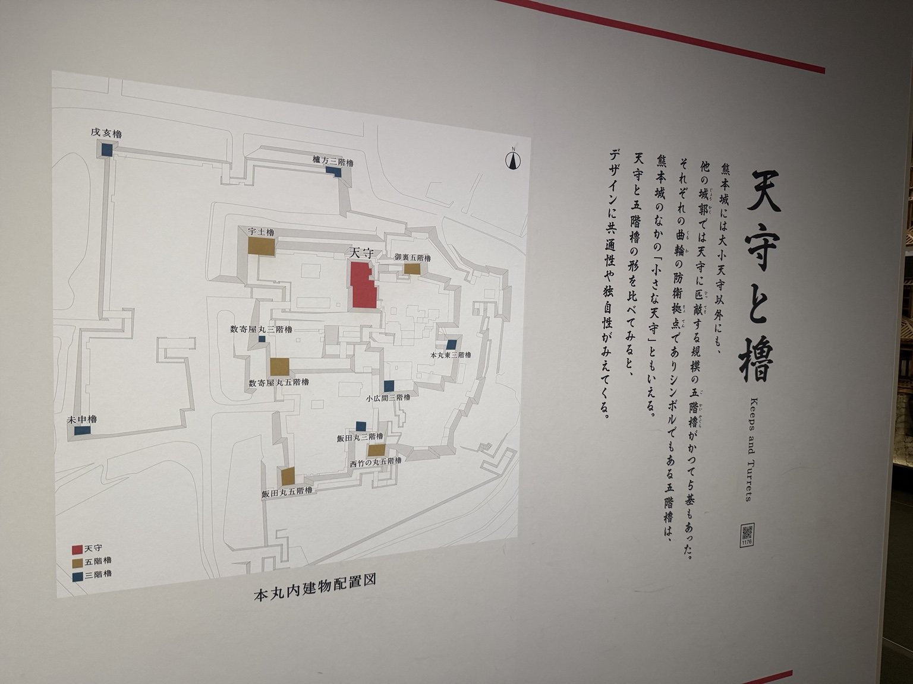
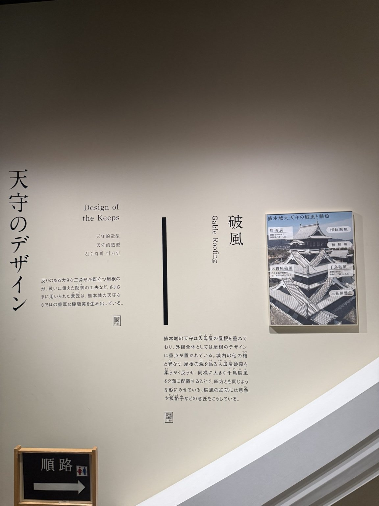
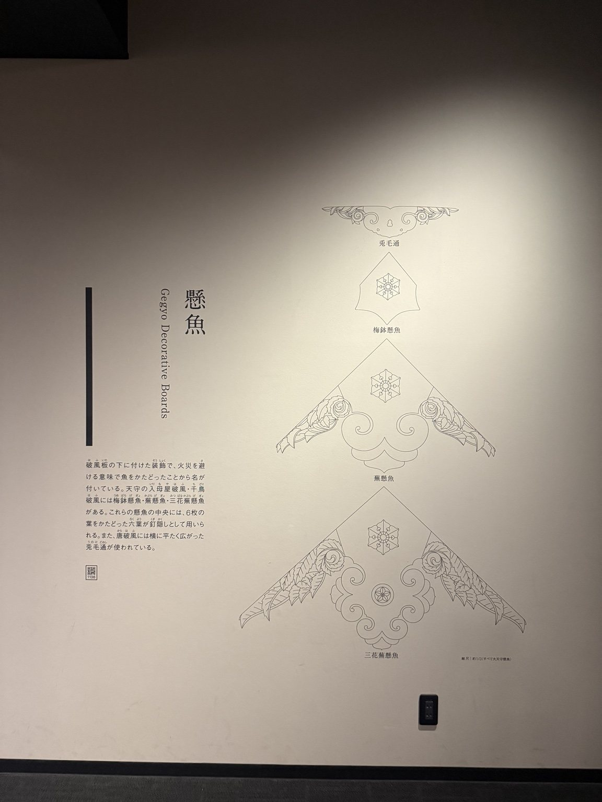
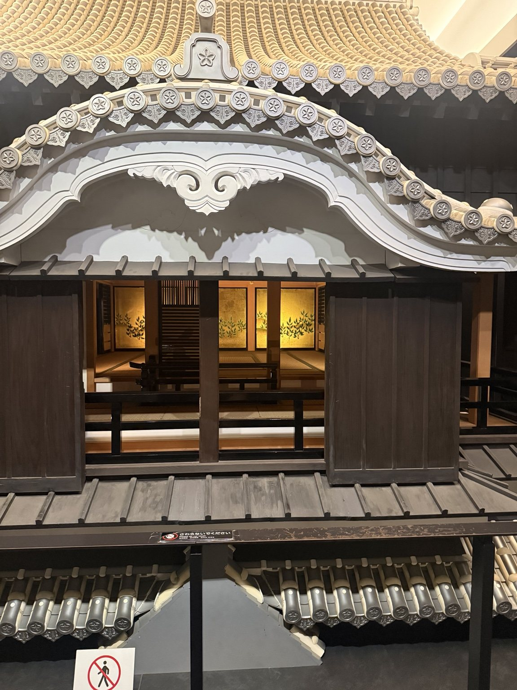
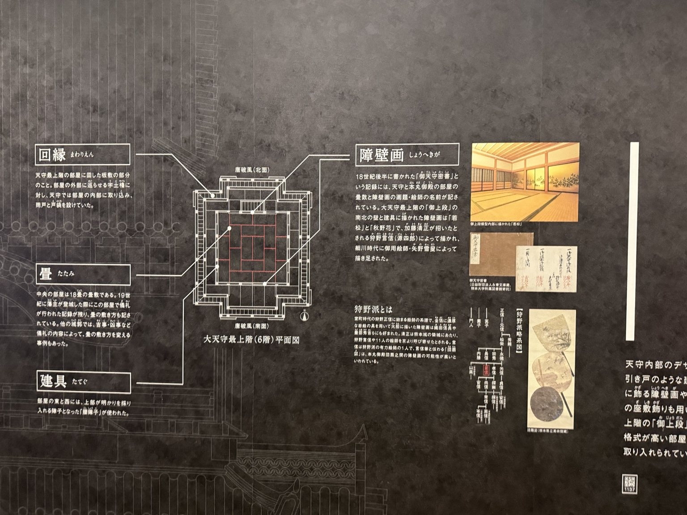
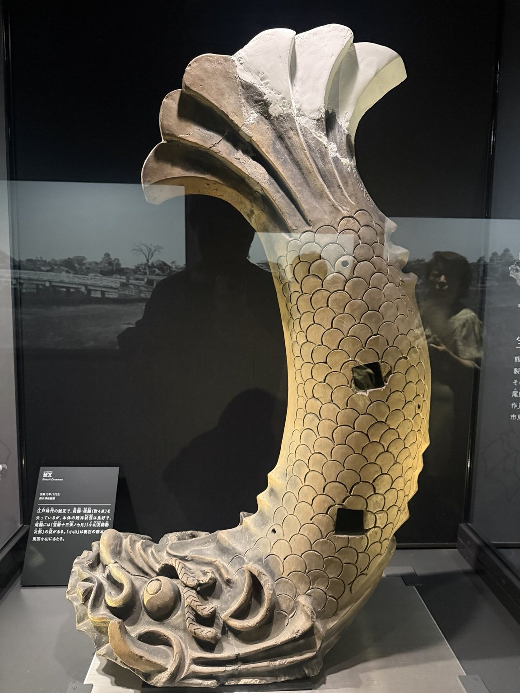

熊本城案例的目的，不是做一篇長長的城史，而是讓讀者理解：一座城如何被設計、使用、攻防、治理，以及如何在後世被重新建構。